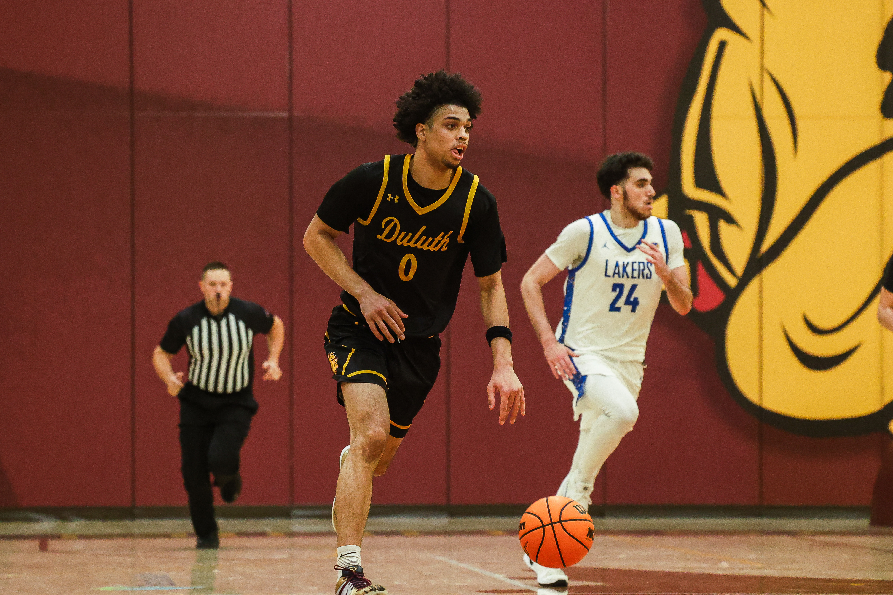

Basketball
Basketball has always been a big part of my life. I love the competitive nature of the game, the teamwork involved, and the fast-paced energy that comes with every play. Whether I'm shooting around with friends or playing in games in front of hundreds of people, basketball is one of my favorite ways to stay active and have fun.
Hanging Out With Friends

Spending time with friends is one of the things I value most. Whether we're exploring new places, relaxing, or just enjoying each other's company, these moments always create some of my best memories. Having a great group of friends has made my time at UMD even more meaningful and enjoyable.